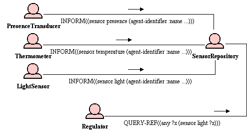

An empty (naive) JSA-base agent
In a multi-agent system, some agents may be needed to store and retrieve some pieces of information. Other agents may interact with such agents to inform or request them about these pieces of information.
A first means to run the so called "empty" or "naive" agent is to simply add an argument to the Jade.Boot command line, the form of which is the following :
<agent name>:jade.semantics.interpreter.SemanticAgentBase
Where SemanticAgentBase can be replaced by SemanticAgent from version 1.4 of the JSA framework. Another possibility is to extend the SemanticAgentBase class, as shown hereunder.
class <my agent class name> extends SemanticAgentBase {};
By choosing this second means you define the framework to specialise later the capabilities of this agent.

Legend
: a simple regulation system
In this example, a regulator agent regulates
the temperature of a room depending on several sensors. When it comes
up, a sensor informs the sensor repository agent, so that the
regulator can request the repository for a particular sensor. Of
course, the sensor repository agent can be an empty JSA-base agent.
+ Naive JSA require no specific code. Hence, they are easy to use.
+ Naive JSA always react according the FIPA-ACL specification. Other agent can interact with them using most of the standard FIPA-ACL communicative acts.
- Naive JSA have naive behaviours. For example, they always trust other agents. In this example, we can improve the sensor repository agent, by adding specific capabilities to perform some checks before adopting a belief..
TO BE COMPLETED WITH REFERENCE TO OTHER CARDS.